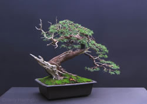
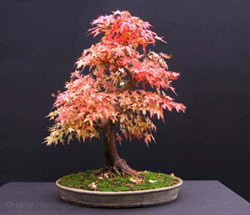

"Never play leap frog with a unicorn" - a wise man
My plans after graduation!
After I graduate, hopefully , I plan to get a job in either consulting or for a startup company.
If all goes to plan I would love to be able to get back home to California , seeing as that I truly have not lived there
in over 3 years. After my internship last summer at a VC firm , I realized how exciting the world of new technology and
developments can be. Working at a place where I can use my problem solving skills as well as love for technology would be ideal.
Calm down, Internet: Twitter is not going public just yet,
nor any time in the next month or so at the very least.
The company has filed a "confidential" S-1 IPO with the SEC, meaning it signaled its intent
to go public
at some point and is getting its paperwork ducks in a row.
Bonsai

Bonsai is a Japanese word composed of two separate words: “bon” meaning tray or shallow container and “sai”
meaning a plant. Today however, “bonsai” has a much broader meaning and is referred to around the world as an art
form consisting of dwarfing (physically not genetically) trees, shrubs, or other plants in an aesthetically appealing way that
unites both artistry and nature to create miniature trees that symbolize their larger counterparts in nature. This is achieved by
growing certain plants in shallow pots or trays and subjecting them to regular pruning and wiring. It is an art form that consist
of about 80% artistry and 20% horticulture (the science and art of cultivating plants).
“Killing trees is the tuition you pay for learning bonsai.” - John Naka
Bonsai is different from most other art forms. Unlike most art forms like painting, wood carving, pottery, sculpting, etc,
bonsai creations are constantly growing and changing. As a result, it is an art form that requires great patience, dedication,
and improves with expertise. It is an ideal outlet for nature lovers to express their enthusiasm and be part of the natural
process.
Brief History
Growing plants and trees in containers can be traced back to ancient Egypt, however bonsai was derived directly from Chinese
penjing. The exact dates of penjing and bonsai creation are unknown, but the first documented evidence of penjing dates back to
the Tang Dynasty in China around the year 600. It is understood that by that time the craft was well developed since detailed
scrolls were found describing the art form. The earliest-known graphic dates from 706 and was found in a wall mural on a corridor
leading to the tomb of Prince Zhang Huai at the Qianling Mausoleum site in 1972.
It is believed that Japan’s first encounters with the art occurred around the 6th century when Buddhist students returning
from China brought back miniature landscapes and trees from China. Saigyo Monogatari Emaki was the earliest known scroll to depict
dwarfed potted trees in Japan. It dates from 1195, although some sources say this dates from 1250. In the year 1300, Kokan
Shiren (master of Chinese Poetry) outlined the aesthetic principles for what would be termed bonsai. For the next five hundred
years, bonsai experienced various modifications, but it wasn’t until the 19th century that the art of bonsai entered the
classical period when a group of Chinese scholars met to discuss bonsai styles. However it wasn’t until after WWII that bonsai
became noticed and available to the Western world. Due to the large numbers of bonsai shows in the 20th century, bonsai rapidly
modernized and became virally popular amongst enthusiasts in all areas of the world. Today there are hundreds of thousands of
bonsai enthusiasts and plant species from all parts of the world are being trained as bonsai. The art form is still spreading
and there are over twelve hundred books on bonsai in over twenty six different languages.
Bonsai Styles

Bonsai is a very refined and precise art form. As such, each bonsai must conform to a clearly defined style. There are many
officially recognized styles, but there are five main ones that every enthusiast should be familiar with; these are cascade,
formal upright, informal upright, semi-cascade, and slanting.
It is often easiest to start working on a tree keeping in mind what style it will embody, however not choosing a style right
away will not take away from your enjoyment of the art.
Formal Upright (Chokkan)
This style requires the tree to grow in a perfectly straight line upwards with a vertical taper where the base is visibly
wider than the top. There should also be a visible nebari to complete the visual effect of a tree in nature that grows in open
flat ground, without competition from other trees, and protected from strong winds. This style represents maturity, perfection,
and and timeless quality.
Informal Upright (Moyogi)
Informal upright trees grow straight up but with delicate curves in the trunk (usually two or three). The first curve starts at
the trunk which tilts at an angle. The remaining curves are spread out throughout the rest of the trunk. This is an ideal style
for beginners. Trees well suited for the style include most species of trees, but specifically deciduous trees, flowering trees,
maples, elms, and quince.
Cascade (Kengai)
Cascade style represents a tree growing on a cliff with branches flowing down (cascading) past the base of the tree. This style
requires the tree to be grown in a pot that is placed on an elevated stand since the tree’s branches extend past the base of the
container. This style can be successfully achieved with junipers, yews, pines and other confer bonsai. This style takes a lot of
patience and dedication as the tree will naturally try to grow upwards.
Semi-Cascade (Han Kengai)
This style is very similar to the cascade style. The difference is that the descending tree trunk doesn’t normally go any
lower than the base of the pot allowing the tree to be displayed on a flat table instead of a tall stand. This style symbolizes
trees that grow over flowing water and rivers where the branches almost touch the water. This style can be used for most trees,
but works best with junipers, yews, pines and other conifer bonsai.
Slanting (Shakan)
Slanting style trees have trunks that slant dramatically to one side as if the tree was forced sideways by some natural
phenomenon like strong wind, landslide, or knocked over by a fallen larger tree. This style has branches on both sides of the
trunk. This is important to note, because this style is similar to Windswept, which features all the branches on one side.